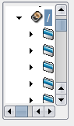
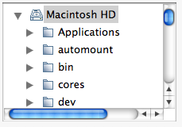

| Version: 2.9.4 |
#include </home/zeitlin/src/wx/github/interface/wx/dirctrl.h>
 Inheritance diagram for wxGenericDirCtrl:
Inheritance diagram for wxGenericDirCtrl:This control can be used to place a directory listing (with optional files) on an arbitrary window.
The control contains a wxTreeCtrl window representing the directory hierarchy, and optionally, a wxChoice window containing a list of filters.
This class supports the following styles:
 |  |  |
| wxMSW appearance | wxGTK appearance | wxMac appearance |
Public Member Functions | |
| wxGenericDirCtrl () | |
| Default constructor. | |
| wxGenericDirCtrl (wxWindow *parent, const wxWindowID id=wxID_ANY, const wxString &dir=wxDirDialogDefaultFolderStr, const wxPoint &pos=wxDefaultPosition, const wxSize &size=wxDefaultSize, long style=wxDIRCTRL_3D_INTERNAL, const wxString &filter=wxEmptyString, int defaultFilter=0, const wxString &name=wxTreeCtrlNameStr) | |
| Main constructor. | |
| virtual | ~wxGenericDirCtrl () |
| Destructor. | |
| virtual bool | CollapsePath (const wxString &path) |
| Collapse the given path. | |
| virtual void | CollapseTree () |
| Collapses the entire tree. | |
| bool | Create (wxWindow *parent, const wxWindowID id=wxID_ANY, const wxString &dir=wxDirDialogDefaultFolderStr, const wxPoint &pos=wxDefaultPosition, const wxSize &size=wxDefaultSize, long style=wxDIRCTRL_3D_INTERNAL, const wxString &filter=wxEmptyString, int defaultFilter=0, const wxString &name=wxTreeCtrlNameStr) |
| Create function for two-step construction. | |
| virtual bool | ExpandPath (const wxString &path) |
| Tries to expand as much of the given path as possible, so that the filename or directory is visible in the tree control. | |
| virtual wxString | GetDefaultPath () const |
| Gets the default path. | |
| virtual wxString | GetFilePath () const |
| Gets selected filename path only (else empty string). | |
| virtual void | GetFilePaths (wxArrayString &paths) const |
| Fills the array paths with the currently selected filepaths. | |
| virtual wxString | GetFilter () const |
| Returns the filter string. | |
| virtual int | GetFilterIndex () const |
| Returns the current filter index (zero-based). | |
| virtual wxDirFilterListCtrl * | GetFilterListCtrl () const |
| Returns a pointer to the filter list control (if present). | |
| virtual wxString | GetPath () const |
| Gets the currently-selected directory or filename. | |
| virtual void | GetPaths (wxArrayString &paths) const |
| Fills the array paths with the selected directories and filenames. | |
| virtual wxTreeItemId | GetRootId () |
| Returns the root id for the tree control. | |
| virtual wxTreeCtrl * | GetTreeCtrl () const |
| Returns a pointer to the tree control. | |
| virtual void | Init () |
| Initializes variables. | |
| virtual void | ReCreateTree () |
| Collapse and expand the tree, thus re-creating it from scratch. | |
| virtual void | SetDefaultPath (const wxString &path) |
| Sets the default path. | |
| virtual void | SetFilter (const wxString &filter) |
| Sets the filter string. | |
| virtual void | SetFilterIndex (int n) |
| Sets the current filter index (zero-based). | |
| virtual void | SetPath (const wxString &path) |
| Sets the current path. | |
| virtual void | ShowHidden (bool show) |
| virtual void | SelectPath (const wxString &path, bool select=true) |
| Selects the given item. | |
| virtual void | SelectPaths (const wxArrayString &paths) |
| Selects only the specified paths, clearing any previous selection. | |
| virtual void | UnselectAll () |
| Removes the selection from all currently selected items. | |
| wxGenericDirCtrl::wxGenericDirCtrl | ( | ) |
Default constructor.
| wxGenericDirCtrl::wxGenericDirCtrl | ( | wxWindow * | parent, |
| const wxWindowID | id = wxID_ANY, |
||
| const wxString & | dir = wxDirDialogDefaultFolderStr, |
||
| const wxPoint & | pos = wxDefaultPosition, |
||
| const wxSize & | size = wxDefaultSize, |
||
| long | style = wxDIRCTRL_3D_INTERNAL, |
||
| const wxString & | filter = wxEmptyString, |
||
| int | defaultFilter = 0, |
||
| const wxString & | name = wxTreeCtrlNameStr |
||
| ) |
Main constructor.
| parent | Parent window. |
| id | Window identifier. |
| dir | Initial folder. |
| pos | Position. |
| size | Size. |
| style | Window style. Please see wxGenericDirCtrl for a list of possible styles. |
| filter | A filter string, using the same syntax as that for wxFileDialog. This may be empty if filters are not being used. Example: "All files (*.*)|*.*|JPEG files (*.jpg)|*.jpg" |
| defaultFilter | The zero-indexed default filter setting. |
| name | The window name. |
| virtual wxGenericDirCtrl::~wxGenericDirCtrl | ( | ) | [virtual] |
Destructor.
| virtual bool wxGenericDirCtrl::CollapsePath | ( | const wxString & | path | ) | [virtual] |
Collapse the given path.
| virtual void wxGenericDirCtrl::CollapseTree | ( | ) | [virtual] |
Collapses the entire tree.
| bool wxGenericDirCtrl::Create | ( | wxWindow * | parent, |
| const wxWindowID | id = wxID_ANY, |
||
| const wxString & | dir = wxDirDialogDefaultFolderStr, |
||
| const wxPoint & | pos = wxDefaultPosition, |
||
| const wxSize & | size = wxDefaultSize, |
||
| long | style = wxDIRCTRL_3D_INTERNAL, |
||
| const wxString & | filter = wxEmptyString, |
||
| int | defaultFilter = 0, |
||
| const wxString & | name = wxTreeCtrlNameStr |
||
| ) |
Create function for two-step construction.
See wxGenericDirCtrl() for details.
| virtual bool wxGenericDirCtrl::ExpandPath | ( | const wxString & | path | ) | [virtual] |
Tries to expand as much of the given path as possible, so that the filename or directory is visible in the tree control.
| virtual wxString wxGenericDirCtrl::GetDefaultPath | ( | ) | const [virtual] |
Gets the default path.
| virtual wxString wxGenericDirCtrl::GetFilePath | ( | ) | const [virtual] |
Gets selected filename path only (else empty string).
This function doesn't count a directory as a selection.
| virtual void wxGenericDirCtrl::GetFilePaths | ( | wxArrayString & | paths | ) | const [virtual] |
Fills the array paths with the currently selected filepaths.
This function doesn't count a directory as a selection.
| virtual wxString wxGenericDirCtrl::GetFilter | ( | ) | const [virtual] |
Returns the filter string.
| virtual int wxGenericDirCtrl::GetFilterIndex | ( | ) | const [virtual] |
Returns the current filter index (zero-based).
| virtual wxDirFilterListCtrl* wxGenericDirCtrl::GetFilterListCtrl | ( | ) | const [virtual] |
Returns a pointer to the filter list control (if present).
| virtual wxString wxGenericDirCtrl::GetPath | ( | ) | const [virtual] |
Gets the currently-selected directory or filename.
| virtual void wxGenericDirCtrl::GetPaths | ( | wxArrayString & | paths | ) | const [virtual] |
Fills the array paths with the selected directories and filenames.
| virtual wxTreeItemId wxGenericDirCtrl::GetRootId | ( | ) | [virtual] |
Returns the root id for the tree control.
| virtual wxTreeCtrl* wxGenericDirCtrl::GetTreeCtrl | ( | ) | const [virtual] |
Returns a pointer to the tree control.
| virtual void wxGenericDirCtrl::Init | ( | ) | [virtual] |
Initializes variables.
| virtual void wxGenericDirCtrl::ReCreateTree | ( | ) | [virtual] |
Collapse and expand the tree, thus re-creating it from scratch.
May be used to update the displayed directory content.
| virtual void wxGenericDirCtrl::SelectPath | ( | const wxString & | path, |
| bool | select = true |
||
| ) | [virtual] |
Selects the given item.
In multiple selection controls, can be also used to deselect a currently selected item if the value of select is false. Existing selections are not changed. Only visible items can be (de)selected, otherwise use ExpandPath().
| virtual void wxGenericDirCtrl::SelectPaths | ( | const wxArrayString & | paths | ) | [virtual] |
Selects only the specified paths, clearing any previous selection.
Only supported when wxDIRCTRL_MULTIPLE is set.
| virtual void wxGenericDirCtrl::SetDefaultPath | ( | const wxString & | path | ) | [virtual] |
Sets the default path.
| virtual void wxGenericDirCtrl::SetFilter | ( | const wxString & | filter | ) | [virtual] |
Sets the filter string.
| virtual void wxGenericDirCtrl::SetFilterIndex | ( | int | n | ) | [virtual] |
Sets the current filter index (zero-based).
| virtual void wxGenericDirCtrl::SetPath | ( | const wxString & | path | ) | [virtual] |
Sets the current path.
| virtual void wxGenericDirCtrl::ShowHidden | ( | bool | show | ) | [virtual] |
| show | If true, hidden folders and files will be displayed by the control. If false, they will not be displayed. |
| virtual void wxGenericDirCtrl::UnselectAll | ( | ) | [virtual] |
Removes the selection from all currently selected items.